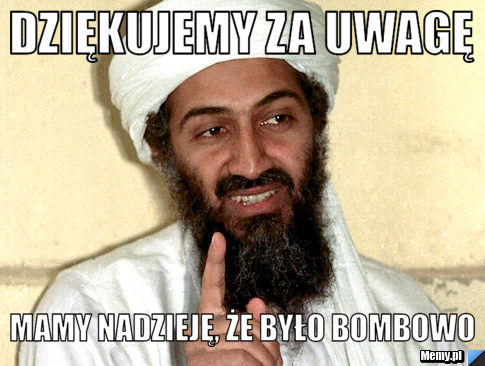

Polacy na frontach I wojny światowej
Jakub Lis i Jakub Cieślak
Polacy w armiach państw zaborczych
Główne formacje, w których walczyli polacy podczas I wojny światowej
- Legiony polskie
- Armia polska we Francji
- Korpusy polskie w Rosji
Szybkie fakty o Legionach Polskich
- data utworzenia - 27 sierpnia 1914
r.
- miejsce utworzenia - Austro-Węgry
- strona w konflikcie - państwa
centralne
- liczebność (rok 1915) - 16 500
Ważne bitwy Legionów Polskich
struktura organizacyjna Legionów Polskich
Początkowo istniały dwa legiony:
- Legion Wschodni - dow. gen. Adam Pietraszkiewicz
- Legion Zachodni dow. – gen. Rajmund Baczyński, a po 25 września 1914 gen. Karol
Durski-Trzaska
Później przeformowano je w trzy brygady
- I brygada pod dowództwem
- Józefa Piłsudskiego do 27 września 1916
- Kazimierza Sosnkowskiego do października 1916
- Mariana Żegota-Januszajtis do 30 lipca 1917
- II brygada pod dowództwem
- Ferdynanda Küttnera do 14 lipca 1916
- Józefa Hallera do 19 lutego 1918
- III brygada pod dowództwem
- Wiktora Grzesickiego do 14 lipca 1916
- Stanisława Szeptyckiego do 14 listopada 1916
- Zygmunta Zielińskiego do 25 kwietnia 1917
- Bolesława Roji do 30 lipca 1917
Austriackie dowództwo Legionów Polskich
- gen. Karol Trzaska-Durski
- płk. Józef Haller
- gen. Stanisław Puchalski
- płk. Stanisław Szeptycki
- płk. Zygmunt Zieliński
Szybkie Fakty
- Została powołana dekretem prezydenta Francji Raymonda Poincarégo 4 czerwca 1917 z
inicjatywy Romana
Dmowskiego
- Składała się z 3 korpusów, po 2 dywizje każdy
- Oprócz korpusów w jej skład wchodziły 3 oddziały samodzielne
Najważniejsi polscy dowódcy I Wojny Światowej

Prezentację przygotowali Jakub Lis i Jakub Cieślak